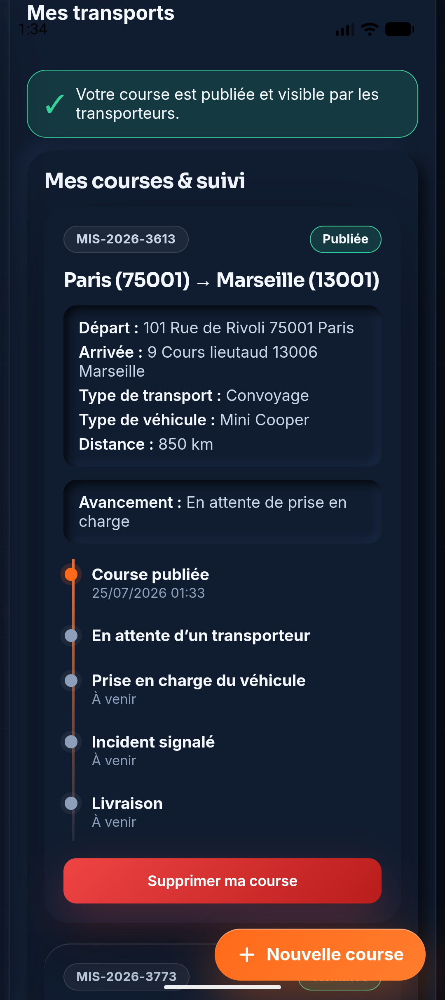
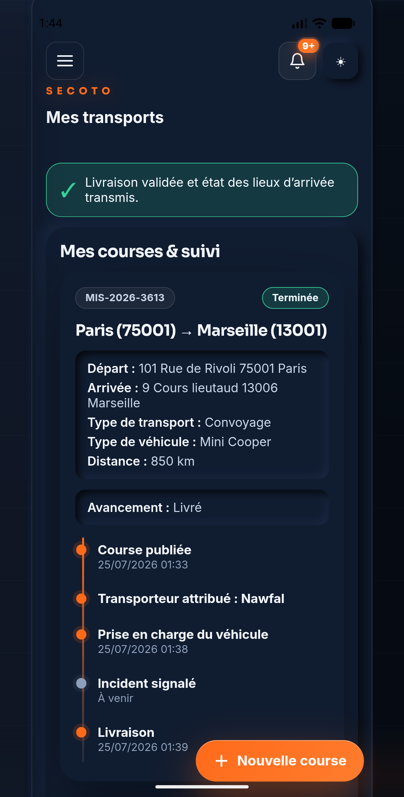

Informations éparpillées
Le véhicule, les adresses, les contacts et les contraintes circulent entre plusieurs canaux.
Risque : une consigne manque au moment décisif.
Coordination logistique · Convoyage & plateau
Une solution pensée pour les professionnels de l’automobile qui veulent centraliser la demande, le suivi, les preuves et les documents.
Le trajet n’est qu’une partie du sujet
Appels, messages, photos et pièces jointes isolées compliquent le partage du statut d’une course. SECOTO rattache les éléments utiles à un dossier unique.
Le véhicule, les adresses, les contacts et les contraintes circulent entre plusieurs canaux.
Risque : une consigne manque au moment décisif.
Sans fil de suivi commun, chaque relance mobilise l’atelier, le commerce ou l’exploitation.
Risque : vos équipes travaillent avec une information différente.
Photos, devis, bon de mission et facture doivent rester accessibles après la livraison.
Risque : reconstituer le dossier prend plus de temps que prévu.
Un véhicule. Une mission. Un fil d’information.
SECOTO relie la demande, la coordination, les mises à jour terrain et le circuit documentaire.
Le parcours SECOTO en quatre verbes
Véhicule, trajet, date, adresses, distance, contacts et consignes sont centralisés.
La mission est attribuée dans un cadre contrôlé, avec un interlocuteur identifiable.
Prise en charge, incident éventuel et livraison apparaissent dans la timeline de la course.
Devis, signature dans l’application, bon de mission et facture restent rattachés au dossier.
Démonstration produit · Création d’une course
Un dossier compréhensible par tous les intervenants.
Espace client ProUne décision guidée par le véhicule et votre priorité
Le prix et la faisabilité sont confirmés dans le devis propre à la mission.
| Critère | 01 · Convoyage | 02 · Plateau / remorque |
|---|---|---|
| Principe | Le véhicule est conduit par un convoyeur professionnel. | Le véhicule est transporté sans rouler. |
| Véhicule adapté | Roulant, assuré et apte à circuler. | Roulant ou non roulant, selon les conditions d’accès et de chargement. |
| Cas fréquents | Mouvement de parc, livraison courante, transfert entre sites. | Véhicule non roulant, de collection, de valeur ou sans kilométrage souhaité. |
| Kilométrage | Le trajet est parcouru par le véhicule. | Pas de kilomètre supplémentaire au compteur. |
| Frais | Les frais réels éventuels sont précisés et traités selon le devis. | Le périmètre d’acheminement et de chargement est précisé au devis. |
| Parcours SECOTO | Demande, coordination, devis, suivi par étapes, photos et documents. | Le même socle de coordination et de traçabilité. |
Le mode change. Le pilotage reste le même.
Vous conservez un dossier unique, une timeline claire et les documents liés à chaque mission.
Du besoin à la livraison
Trajet, véhicule, date souhaitée, adresses et contraintes sont réunis dès le départ.
Les informations privées restent protégées jusqu’à l’attribution de la mission.
Le client le consulte et le signe directement dans l’application.
État du véhicule, kilométrage, carburant, commentaires et photos sont rattachés à l’étape.
Le cas échéant, l’événement est ajouté avec commentaire et photos dans la timeline.
L’état des lieux d’arrivée est transmis ; historique et documents restent consultables.
Pour vos équipes
Le commerce, l’atelier et l’exploitation peuvent se référer au même dossier de mission.
Pour la traçabilité
Dates, commentaires et photos facilitent la relecture du parcours en cas de question.
Une interface conçue autour de la mission
La référence, le trajet, le statut et la timeline se lisent dans le même espace. Les mises à jour restent compréhensibles sans reconstituer une chaîne de messages.
Réassurance opérationnelle
Les justificatifs transmis peuvent inclure assurance professionnelle, Kbis/SIREN, licence, identité et carte grise.

Course publiée

Livraison validée
La technologie ne remplace pas la coordination. Elle la rend visible.
SECOTO reste l’interlocuteur qui organise la mission et centralise l’information utile.
Le prochain pas est simple
Transmettez les six informations ci-dessous. SECOTO vérifie la faisabilité, coordonne la mission et vous adresse un devis avant confirmation.
Coordination logistique & mise en relation
Auto · Moto · Utilitaire · France & Europe